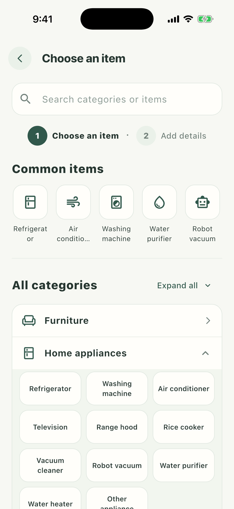
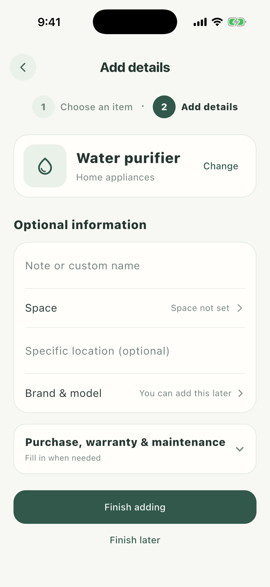

01 · Start with a real household item
Create an item profile
Create a profile for the water purifier first. Its care plans, photos, costs, and history will stay together under this item.


- 1
Open the add flow
Go to Items and tap the add button in the upper-right corner.
- 2
Choose Water purifier
Tap Water purifier under Common items. LAURUS fills the suitable category, and you can still adjust the name.
- 3
Add useful details
Add its space, brand, model, purchase information, and profile photos as needed. Anything uncertain can wait.
- 4
Finish adding
Review the name and space, then save. The item appears in your archive and is ready for a care plan.